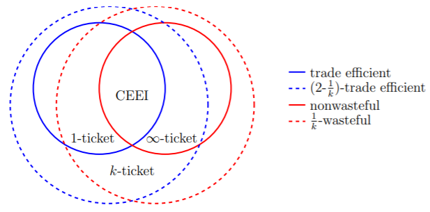
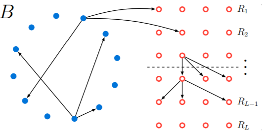
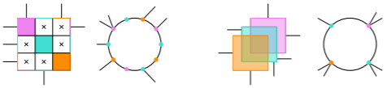
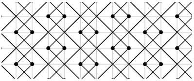
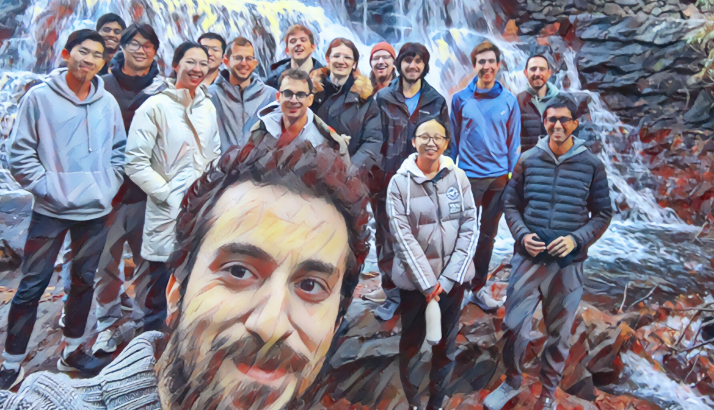

We give an algorithm that, given a set \(X\) of integers and target \(t\), either solves the Subset Sum instance \(X,t \) or solves the Equal Subset Sum instance \(X\) in time \(O^*(2^{0.461n})\) with one-sided error probability \(o_n(1)\). This is exponentially faster than the best known worst-case algorithm for either problem.

About Me
I'm a PhD student in the Theory of Computation Group at Columbia University, advised by Rocco Servedio and Xi Chen.
I'm interested in algorithmic efficiency, chance, complex behavior, and the ways in which analytic thinking can solve everyday problems. My non-research interests include trail running, reading, and exploring the natural world.
Things I'm actively thinking about:
- Faster exact algorithms for Subset Sum and other hard problems
- Innovation, accessibility, and societal orientation of CS teaching
- Best practices for equity in CS teaching, evaluation, and admissions
Interested in pursuing a PhD in (theoretical) computer science? Here's a talk (slides) I gave for Columbia's Demystifying the Dissertation series on the experience of doing research in theory and PhD life more generally, and here's one (slides) from a later iteration of the series that discusses the application process in a little more detail. If you're ready to explore the possibilities of a PhD in CS, here's some advice on considering and applying to grad school that I wrote shortly after deciding to join Columbia.
If you'd like to chat, please email me at the address at the bottom of the page. I'll answer if time permits and I'm well-positioned to give you a helpful response.
Research
- Xi Chen, Shivam Nadimpalli, Tim Randolph, Rocco Servedio, and Or Zamir. "Testing Sumsets is Hard." Preprint, 2023.
- Tim Randolph. "Exact Algorithms for Finding Sumsets." Preprint, 2023.
- Tim Randolph. "A Hybrid Algorithm for Subset Sum and Equal Subset Sum." Preprint, 2023.
- Xi Chen, Yaonan Jin, Tim Randolph, and Rocco Servedio. "Subset Sum in time \(2^{n/2} / poly(n)\)." RANDOM/APPROX, 2023. arXiv version
- Xi Chen, Yaonan Jin, Tim Randolph, and Rocco Servedio. "Average-Case Subset Balancing Problems." SODA 2022. arXiv version
- Marshall Ball and Tim Randolph. "Communication Lower Bounds for Many-Party PSM." ITC 2022. Conference version
- Nick Arnosti and Tim Randolph. "Parallel Lotteries: Insights from Alaskan Hunting Permit Allocation." Management Science 2021; EC 2021. SSRN version
- Xi Chen, Tim Randolph, Rocco Servedio, and Tim Sun. "A Lower Bound on Cycle Finding in Sparse Digraphs." SODA 2020. arXiv version
- Emilio Di Giacomo, William J. Lenhart, Giuseppe Liotta, Timothy W. Randolph and Alessandra Tappini. "(k,p)-Planarity: A Relaxation of Hybrid Planarity." WALCOM 2019. arXiv version
- Timothy W. Randolph. "Asymptotically Optimal Bounds for \((t,2)\) Broadcast Domination on Finite Grids." Rose-Hulman Undergraduate Mathematics Journal 20, 2019. arXiv version
- Benjamin F. Drews, Pamela E. Harris, and Timothy W. Randolph. "Optimal \((t,r)\) Broadcasts on the Infinite Grid." Discrete Applied Mathematics 255, 2018. arXiv version
- Timothy W. Randolph, advised by William J. Lenhart. "\((k,p)\)-Planar Graphs: A Generalization of Planar Representations for Cluster Graphs." 2018. PDF version
A major goal in the area of exact exponential algorithms is to give an algorithm for the (worst-case) n-input Subset Sum problem that runs in time \(2^{(1/2−c)n}\) for some constant \(c>0\). In this paper we give a Subset Sum algorithm with worst-case running time \(O(2^{n/2⋅n−γ})\) for a constant \(γ>0.5023\) in standard word RAM or circuit RAM models. To the best of our knowledge, this is the first improvement on the classical "meet-in-the-middle" algorithm for worst-case Subset Sum, due to Horowitz and Sahni, which can be implemented in time \(O(2^{n/2})\) in these memory models.
Our algorithm combines a number of different techniques, including the "representation method" introduced by Howgrave-Graham and Joux and subsequent adaptations of the method in Austrin, Kaski, Koivisto, and Nederlof, and Nederlof and Wegrzycki, and "bit-packing" techniques used in the work of Baran, Demaine, and Patrascu on subquadratic algorithms for 3SUM.
Given a set of \(n\) input integers, the Equal Subset Sum problem asks us to find two distinct subsets with the same sum. In this paper we present an algorithm that runs in time \(O^*(3^{0.387n})\) in the~average case, significantly improving over the \(O^*(3^{0.488n})\) running time of the best known worst-case algorithm and the Meet-in-the-Middle benchmark of \(O^*(3^{0.5n})\).
Our algorithm generalizes to a number of related problems, such as the Generalized Equal Subset Sum problem, which asks us to assign a coefficient \(c_i\) from a set \(C\) to each input number \(x_i\) such that \(\sum_{i} c_i x_i = 0\). Our algorithm for the average-case version of this problem runs in~time \(|C|^{(0.5-c_0/|C|)n}\) for some positive constant \(c_0\), whenever \(C=\{0, \pm 1, \dots, \pm d\}\) or \(\{\pm 1, \dots, \pm d\}\) for some positive integer \(d\) (with \(O^*(|C|^{0.45n})\) when \(|C|<10\)). Our results extend to the~problem of finding "nearly balanced" solutions in which the target is a not-too-large nonzero offset \(\tau\).
Our approach relies on new structural results that characterize the probability that \(\sum_{i} c_i x_i =\tau\) has a solution \(c \in C^n\) when \(x_i\)'s are chosen randomly; these results may be of independent interest. Our algorithm is inspired by the "representation technique" introduced by Howgrave-Graham and Joux. This requires several new ideas to overcome preprocessing hurdles that arise in the representation framework, as well as a novel application of dynamic programming in the solution recovery phase of the algorithm.

We analyze the \(k\)-ticket lottery, which is used to allocate hunting permits in the state of Alaska. Each participant is given \(k\) tickets to distribute among lotteries for different types of items. Participants who win multiple items receive their favorite, and new winners are drawn from the lotteries with unclaimed items.
When supply is scarce, equilibrium outcomes of the \(k\)-ticket lottery approximate a competitive equilibrium from equal incomes (CEEI), which is Pareto efficient. When supply is moderate, \(k\)-ticket lotteries exhibit two sources of inefficiency. First, some agents may benefit from trading probability shares. Second, outcomes may be "wasteful": agents may receive nothing even if acceptable items remain unallocated. We bound both sources of inefficiency, and show that each is eliminated by a suitable choice of \(k\): trades are never beneficial when \(k=1\), and waste is eliminated as \(k\) approaches infinity.
The wastefulness of the \(k\)-ticket lottery has some benefits: agents with strong preferences may prefer \(k\)-ticket lottery outcomes to those of any nonwasteful envy-free mechanism. These agents prefer small values of \(k\), while agents with weak preferences prefer large values of \(k\). Together, these results suggest that the \(k\)-ticket lottery performs well under most circumstances, and may be suitable for other settings where items are rationed.

We consider the problem of finding a cycle in a sparse directed graph \(G\) that is promised to be far from acyclic, meaning that the smallest feedback arc set in \(G\) is large. We prove an information-theoretic lower bound, showing that for \(N\)-vertex graphs with constant outdegree any algorithm for this problem must make \(\tilde{\Omega}(N^{5/9})\) queries to an adjacency list representation of \(G\). In the language of property testing, our result is an \(\tilde{\Omega}(N^{5/9})\) lower bound on the query complexity of one-sided algorithms for testing whether sparse digraphs with constant outdegree are far from acyclic. This is the first improvement on the \(\tilde{\Omega}(\sqrt{N})\) lower bound, implicit in Bender and Ron, which follows from a simple birthday paradox argument.

We present a new model for hybrid planarity that relaxes existing hybrid representations. A graph \(G=(V,E)\) is \((k,p)\)-planar if \(V\) can be partitioned into clusters of size at most \(k\) such that \(G\) admits a drawing where: (i) each cluster is associated with a closed, bounded planar region, called a cluster region; (ii) cluster regions are pairwise disjoint, (iii) each vertex \(v \in V\) is identified with at most \(p\) distinct points, called ports, on the boundary of its cluster region; (iv) each inter-cluster edge \((u,v)\in E\) is identified with a Jordan arc connecting a port of \(u\) to a port of \(v\); (v) inter-cluster edges do not cross or intersect cluster regions except at their endpoints. We first tightly bound the number of edges in a \((k,p)\)-planar graph with \(p<k\). We then prove that \((4,1)\)-planarity testing and \((2,2)\)-planarity testing are NP-complete problems. Finally, we prove that neither the class of \((2,2)\)-planar graphs nor the class of \(1\)-planar graphs contains the other, indicating that the \((k,p)\)-planar graphs are a large and novel class.
Let \(G=(V,E)\) be a graph and \(t,r\) be positive integers. The signal that a tower vertex \(T\) of signal strength \(t\) supplies to a vertex \(v\) is defined as \(sig(T,v)=max(t−dist(T,v),0)\), where \(dist(T,v)\) denotes the distance between the vertices \(v\) and \(T\). In 2015 Blessing, Insko, Johnson, and Mauretour defined a \((t,r)\) broadcast dominating set, or simply a \((t,r)\) broadcast, on \(G\) as a set \(T \subseteq V\) such that the sum of all signals received at each vertex \(v\in V\) from the set of towers \(T\) is at least \(r\). The \((t,r)\) broadcast domination number of a finite graph \(G\), denoted \(\gamma_{t,r}(G)\), is the minimum cardinality over all \((t,r)\) broadcasts for \(G\).
Recent research has focused on bounding the \((t,r)\) broadcast domination number for the \(m \times n\) grid graph \(G_{m,n}\). In 2014, Grez and Farina bounded the \(k\)-distance domination number for grid graphs, equivalent to bounding \(\gamma_{t,1}(G_{m,n})\). In 2015, Blessing et al. established bounds on \(\gamma_{2,2}(G_{m,n})\), \(\gamma_{3,2}(G_{m,n})\), and \(\gamma_{3,3}(G_{m,n})\). In this paper, we take the next step and provide a tight upper bound on \(\gamma_{t,2}(G_{m,n})\) for all \(t>2\). We also prove the conjecture of Blessing et al. that their bound on \(\gamma_{3,2}(G_{m,n})\) is tight for large values of \(m\) and \(n\).

Let \(G=(V,E)\) be a graph and \(t,r\) be positive integers. The signal that a tower vertex \(T\) of signal strength \(t\) supplies to a vertex \(v\) is defined as \(sig(T,v)=max(t−dist(T,v),0)\), where \(dist(T,v)\) denotes the distance between the vertices \(v\) and \(T\). In 2015 Blessing, Insko, Johnson, and Mauretour defined a \((t,r)\) broadcast dominating set, or simply a \((t,r)\) broadcast, on \(G\) as a set \(T \subseteq V\) such that the sum of all signals received at each vertex \(v\in V\) from the set of towers \(T\) is at least \(r\). We say that \(T\) is optimal if \(|T|\) is minimal among all such sets \(T\). The cardinality of an optimal \((t,r)\) broadcast on a finite graph \(G\) is called the \((t,r)\) broadcast domination number of \(G\). The concept of \((t,r)\) broadcast domination generalizes the classical problem of domination on graphs. In fact, the \((2,1)\) broadcasts on a graph G are exactly the dominating sets of \(G\).
In their paper, Blessing et al. considered \((t,r) \in \{(2,2),(3,1),(3,2),(3,3)\}\) and gave optimal \((t,r)\) broadcasts on \(G_{m,n}\), the grid graph of dimension \(m\times n\), for small values of \(m\) and \(n\). They also provided upper bounds on the optimal \((t,r)\) broadcast numbers for grid graphs of arbitrary dimensions. In this paper, we define the density of a \((t,r)\) broadcast, which allows us to provide optimal \((t,r)\) broadcasts on the infinite grid graph for all \(t \geq 2\) and \(r=1,2\), and bound the density of the optimal \((t,3)\) broadcast for all \(t \geq 2\). In addition, we give a family of counterexamples to the conjecture of Blessing et al. that the optimal \((t,r)\) and \((t+1,r+2)\) broadcasts are identical for all \(t \geq 1\) and \(r \geq 1\) on the infinite grid.
Teaching
- Instructor for Columbia COMS W3261: Computer Science Theory. Summer 2023. Course webpage
- Teaching Development Program Advanced Track CTL TDP webpage
- Instructor for Columbia COMS W3261: Computer Science Theory. Summer 2022. Course webpage
- Instructor for Columbia COMS W3261: Computer Science Theory. Summer 2021. Course webpage
- Peer lectures in Columbia CSCI 6261: Advanced Cryptography. 2/5/2020; 2/11/2020.
- Guest lecture in Columbia CSCI 4236: Computational Complexity. 11/1/2019.
- Substitute for Columbia CSOR 4231: Analysis of Algorithms. 10/24/19.
- TA for Columbia CSOR 4231: Analysis of Algorithms. Fall 2019.
- 2019-2020 Teaching Observation Fellowship. CTL TOF webpage
- Innovative Teaching Summer Institute (ITSI) Certification. CTL ITSI webpage
- TA for Columbia COMS 3261: Computer Science Theory. Summer 2019.
- TA for Columbia COMS 6998-06: Computation and the Brain. Fall 2018.
My third time teaching of COMS W3261 focused on participatory governance in the CS classroom. See my Teaching Portfolio for more details.
The Teaching Development Program is a multiyear teaching certification in association with Columbia's Center for Teaching and Learning (CTL). It focuses on cultivating, documenting, and reflecting upon evidence-based, student-centered teaching. The TDP Advanced Track is the highest level teaching certification offered by the CTL.
My second time teaching COMS W3261, I focused on accessibility, effective use of virtual resources, and equity in grading. See my Teaching Portfolio for more details.
Mathematics teaches us to ask questions like "What is the value of f(x)?", "Do any objects of type Y exist?", and "Is Z true?" Theoretical computer science builds on this tradition, expanding our field of inquiry to include questions like "How much time (and other limited resources) does it take to evaluate f(x)?", "Can I write down formal instructions for finding a Y?", and "Can the truth of Z be computed?" In theoretical computer science, we define problems formally and think about how hard they are to solve under various models of computation.
Teaching Observation Fellows are Columbia University doctoral students who work closely with the Center for Teaching and Learning and with each other on a range of supportive, formative, peer-to-peer teaching observation activities.
-Columbia CTLThe Innovative Teaching Summer Institute (ITSI) is a four-day series of collaborative workshops, discussions, and shared reflections all centered on the use of emerging teaching practices and technologies to support effective teaching. ITSI is a unique opportunity for graduate student instructors to work with peers from a variety of disciplines, discuss pedagogical priorities, connect with resources and support, and develop themselves as innovative teachers.
-Columbia CTLService
- PhD Student Representative CS@CU
- Emerging Scholars Program Program website
- Demystifying the PhD / Demystifying the Dissertation Dem. PhD Dem. Dissertation;
- Mentorship CU WISC BEARS;
- Student Workers of Columbia SWC-UAW website
- Pre-Submission Application Review Program CUCS PhD application page
- CUCS Graduate Student Theory Retreat 2021 2019;
Along with Clayton Sanford, I'm the Computer Science PhD Student Representative at Columbia University. We're working to make the department more transparent and accessible to PhD students by building knowledge bases and creating structured channels for feedback to faculty and administration.
With Roland Maio, I coordinated the Emerging Scholars Program at Columbia University from 2019-2022. We worked to broaden the diversity of student perspectives in the department and give CS majors at Columbia the tools to reason ethically about Computer Science.
I focus my outreach work on making the path to graduate education easier to understand and navigate. I spoke as part of Columbia's Demystifying the PhD and Demystifying the Dissertation outreach lecture series.
I have participated in undergraduate mentorship as part of Women in Science at Columbia's mentorship program and the Barnard BEARS (Better, Enhance, & Advance Research Series) program. I've also mentored high schoolers in research with Lumiere Education and the Williams College Alumni Mentorship Program.
I assisted in organizing the Student Workers of Columbia. Living wages, fair benefits, and discrimination recourses ensure that student workers can do their jobs without facing poverty and harassment. Moreover, they make work in academia accessible to those with fewer outside resources.
I'm a proud participant in the ongoing struggle to create a just, antiracist Computer Science department at Columbia. In this context, I have worked on expanded outreach to broaden the pool of research applicants and improving admissions practices and oversight. (If you're interested in recieving feedback on your personal statement for the PhD program before applying, check out our Pre-Submission Application Review program.)

Along with Clayton Sanford, I organized Columbia's first two annual theory student retreats! I'm now an organizer emeritus.
 LICENSED UNDER CC BY-SA 2015-2023.
LICENSED UNDER CC BY-SA 2015-2023.
{kind=link}
{kind=link}